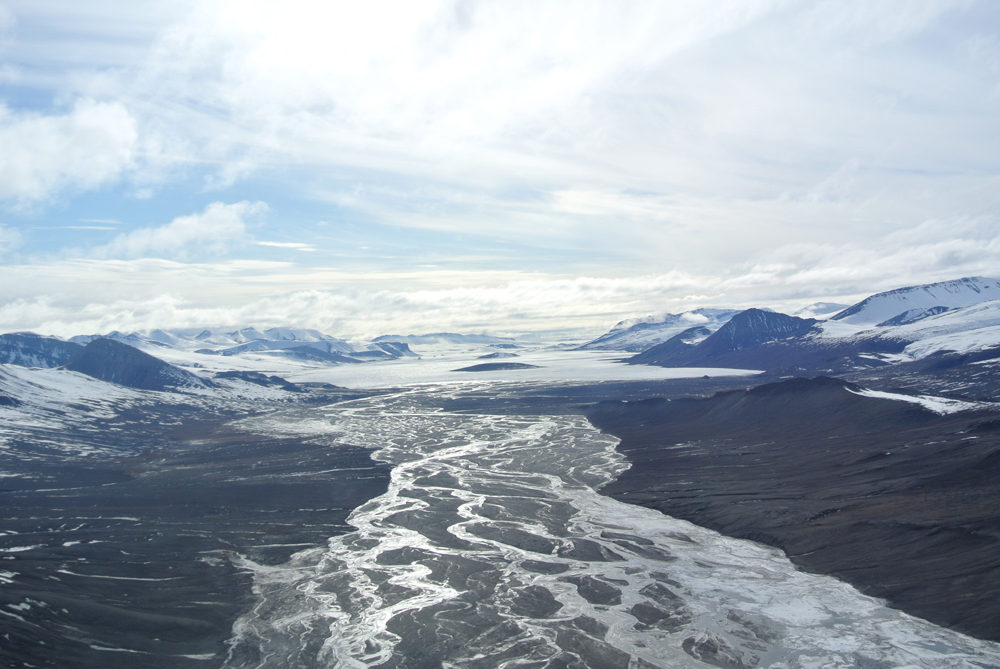
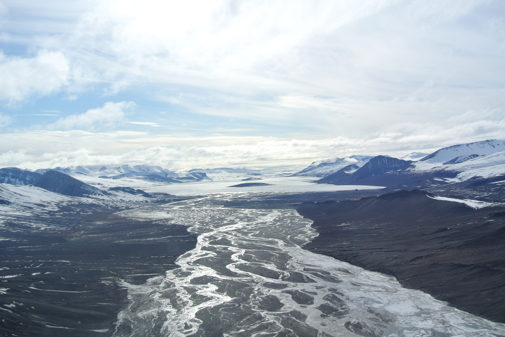

Characterizing the microbial communities at
Abundant previous work has been conducted at Expedition Fiord studying perennial saline springs.
Microbiology of perennial saline springs
Axel Heiberg Island is one the northernmost islands in the High Canadian Arctic
Abundant previous work has been conducted at Expedition Fiord studying perennial saline springs.
